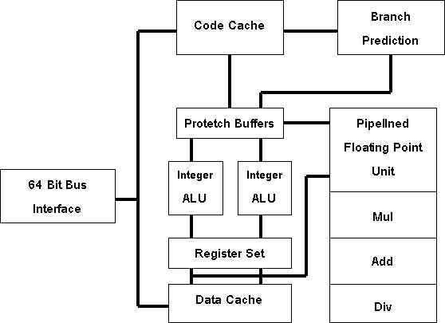

บทนำ
ชิป : ก้าวใหม่ของเทคโนโลยีคอมพิวเตอร์
บทนำ
ปัจจุบันคอมพิวตอร์ได้เข้ามามีอิทธิพลอย่างมากในชีวิตประจำวันของบุคคลทั้งในวงการของธุรกิจและครอบครัวซึ่งจะเห็นได้จากปริมาณการใช้คอมพิวเตอร์ที่เพิ่มมากชึ้นประกอบกับการแข่งขันทางการตลาดที่ทวีความรุนแรงมากยิ่งขึ้นอันเป็นเครื่องชี้ชัดที่แสดงให้เห็นว่าคอมพิวเตอร์ได้เข้ามามีบทบาทต่อมนุษย์เพิ่มมากขึ้น ดังนั้นจากการที่มีปริมาณความ ต้องการใช้คอมพิวเตอร์เพิ่มมากขึ้น ทำให้ผู้ผลิตรายต่าง ๆ พยายามคิดค้นผลิตภัณฑ์ใหม่ ๆ ออกสู่ตลาด ดยเฉพาะในส่วน ของไมโครคอมพิวเตอร์ หรือ คอมพิวเตอร์ส่วนบุคคลที่ผู้ผลิตรายต่าง ๆ ก็ให้ความสนใจกันอย่างมาก วึงได้พยายามคิดประดิษฐ์รุ่นใหม่ ๆ ออกมา ที่มีทั้งประสิทธิภาพในการทำงานสูงและราคาถูก จะเห็นได้ว่า การที่มีการคิดค้นชิป ซึ่งเป็นส่วนประกอบหนึ่งที่สำคัญในเครื่องคอมพิวเตอร์ให้มีคุณสมบัติที่ดีและพิเศษมากขึ้น เพื่อช่วยให้ผลิตภัณฑ์คอมพิวเตอร์ รุ่นใหม่ ๆมีประสิทธิภาพในการทำงานสูงขึ้น
สภาพการณ์ทางการตลาด
ชิป (Chip) หมายถึง ตัวประมวลผลกลางหรือไมโครโพรเซสเซอร์อย่างหนึ่งซึ่งเป็นชิ้นส่วนหรือส่วนประกอบหนึ่งที่สำคัญของเครื่องไมโครคอมพิวเตอร์ ตลอดจนอุปกรณ์อิเล็กทรอนิกส์ต่าง ๆ เช่น เป็นอุปกรณ์ผลิตไฟฟ้า , เป็นอุปกรณ์ที่ใช้ในเครื่องบินและรถไฟฟ้า
ในขณะนี้สภาพการณ์ทางการตลาดของอุตสาหกรรมชิปในประเทศไทย ซึ่งเป็นสิ่งที่ควรให้ความสนใจเป็นอย่างมากเนื่องจากความนิยมในการใช้คอมพิวเตอร์ส่วนบุคคลที่เพิ่มมากขึ้นทำให้มีความจำเป็นที่จะต้องมีการพัฒนาชิปอย่างต่อเนื่องเพื่อช่วยเสริมประสิทธิภาพในการทำงานของเครื่องให้เพิ่มมากขึ้นดังนั้นจากสาเหตุและความจำเป็นดังกล่าว ผู้ผลิตรายต่าง ๆ จึงได้พยายามคิดประดิษฐ์ชิปรุ่นใหม่ ๆ ออกมา เพื่อแย่งชิงส่วนแบ่งของตลาดชิปและตลาดคอมพิวเตอร์ส่วนบุคคล
ท่ามกลางกระแสการแข่งขันที่รุนแรง ผู้ผลิตได้พัฒนาชิปรุ่นต่าง ๆ ออกมาเพื่อที่จะครองส่วนแบ่งตลาดให้มากที่สุดจากเดิมที่บริษัทอินเทลเป็นผู้ครองตลาดมากที่สุดดังจะเห็นได้จาก
เดคชิป 21066 (DEC chip 21066)
เป็นซีพียูแบบริสก์ (RISC : Reduced Instruction Computer) ที่ดัดแปลงมาจาก Alpha ซีพียูของบริษัทดิจิตอล อีควิปเม้นท์ฯ ซึ่งออกแบบมาเพื่อสนับสนุนการทำงานของ Windows NT จุดเด่นก็คือ ลดต้นทุนในการผลิตเมนบอร์ด แต่คงความเร็วสูงสุดของริสก์ไว้และมีการรวมเอาระบบติดต่อกับหน่วยความจำ เช่น SRAM (Static RAM), DRAM (Dynamic RAM) และ VRAM (Video RAM) เอาไว้ในตัวและยังเพิ่มวงจรควบคุมการติดต่อกับบัสในระบบ PCI (Peripheral Component) มีการลดบัสภายนอกที่ติดต่อหน่วยความจำลงเหลือ 64 บิตทำให้ออกแบบเมนบอร์ดได้ง่ายและราคาถูกลง
DECchip 21066 เป็นซีพียูที่มีความเร็วสูงสุดในซีพียูแบบริสก์ที่จะกล่าวในที่นั้สร้างด้วยเทคโนโลยีซีมอสแบบโลหะ 3 ชั้น (Three-Layer-Metal CMOS) มีขนาดเซลล์ 0.68 ไมครอน มีทรานซิสเตอร์ 1.75 ล้านตัว สามารถคำนวณเลขทศนิยมได้เร็วถึง 105 SPECfp92 ซึ่งเร็วกว่าเพนเทียมที่ 66 Mhz ประมาณ 2 เท่าใช้ ความเร็วสัญญาณนาฬิกาได้สูงถึง 166 เมกะเฮิรตซ์ ใช้แรงดันภายในเพียง 3.3 Volts แต่ทำงานร่วมกับอุปกรณ์ภายนอกที่ 5 Volts แต่มีข้อเสียคือต้องใช้กำลังไฟสูงถึง 20 วัตต์ ทำให้ไม่เหมาะกับโน๊ตบุ๊กคอมพิวเตอร์ซึ่งคาดว่าจะสามารถครองตลาดทางด้านเซิร์ฟเวอร์วินโดว์เอ็นทีและเครื่องตั้งโต๊ะระดับไฮเอนด์ได้เพราะมีวงจรทุกอย่างที่ต้องการอยู่ในตัวจะทำให้ราคาถูก
ไมโคร สปาร์ก ทู(Micro Sparc II)
ชิปตัวนี้เป็นรุ่นโลว์เอนด์ของตระกูลสปาร์กของซัน ไม่โครซิสเต็มส์ ออกแบบมาให้ราคาถูกเหมาะกับเครื่องตั้งโต๊ะและได้พยายามรวมวงจรอินเตอร์เฟสต่าง ๆ ไว้ในตัวเช่นกันและยังใช้ Sbus แทนที่ PCI นอกจากนั้นยังสนับสนุนระบบปฏิบัติการโซลาริส (Solaris) จองบริษัทมากกว่าจะสนับสนุนวินโดว์เอ็นที ชิปตัวนี้ใช้เทคโนโลยีซีมอสแบบโลหะ 3 ชั้นเช่นกัน แต่ย่อส่วนเซลล์ได้เล็กกว่าคือ 0.5ไมครอนมีทรานซิสเตอร์ 2.3 ล้านตัว ผลิตโดยฟูจิตสึของญี่ปุ่น ทำงานที่ 3.3 Vols ใช้ Clock ได้ระหว่าง 50-125 Mhz กินกำลังไฟประมาณ 5วัตต์ มีระบบจัดการพลังงานทำให้ในภาวะรอทำงานสามารถตัดไฟที่ไปเลี้ยงหน่วยความจำแคชทั้งหมดได้ถึงร้อยละ 75 และตัวสัญญาณนาฬิกาที่ไปเลี้ยงวงจรตรรกะที่ไม่จำเป็นได้เกือบหมด
การเพิ่มประสิทธิภาพในไมโคร สปาร์ก ทู เช่น เพิ่มแคชคำสั้ง (Instruction Cache) เป็น 16 KB ส่วน แคชข้อมูล (Data Cache) เป็น 8 KB การอ้างตำแหน่งหน่วยความจำในแคช ใช้เทคนิคตำแหน่งเหมือนหรือที่เรียกว่า เวอร์ชวลแอดเดรส (Virtual Address) คือ ไม่ใช้แอเดรสจริงที่ส่งมาจากหน่วยจัดการความจำ หรือ MMU (MMU = Memory Management Unit) โดยตรงแต่ใช้การเปิดตารางตำแหน่งจากแอดเดรสจริงเปมือนกับหย่วยความจำเสมือนในเครื่องมินิที่แปลงแอดเดรสจริงเป็นตำแหน่งที่อยู่ข้อมูลในดิสก์วิธีนี้มีข้อดีบางอย่างแต่ต้องมีวงจรภายในมากมายมาช่วยและการเพิ่มความจำแคชภายนอกทำได้ยาก นอกจากนี้ ที่ความเร็ว 85 Mhz ไมโคร สปาร์ก ทู ประมวลผลเลขจำนวนเต็มได้ 57.2 SPECint92 เลขทศนิยมทำได้เพียง 49.5 SPECfp92 ซึ่งไม่ถึงครึ่งหนึ่งของ DECchip21066
เพาเวอร์พีซี 603 (PowerPC : MPC603)
เกิดจากความร่วมมือของ บริษัทไอบีเอ็ม บริษัทแอปเปิล และบริษัทไมโตโรล่าโดยไอบีเอ็มและโมโตโรล่า รับหน้าที่ในการออกแบบชิปซึ่งเพาวอร์พีซีเป็นโพรเซสเซอร์ที่ใช้สถาปัตยกรรมแบบ RISC โดย PowerPC 603 นี้เป็นการดัดแปลงจากต้นฉบับรุ่น 601 ให้เป็นรุ่น 603 เพื่อให้กินกำลังไฟน้อยกว่าและมีประสิทธิภาพสูง เหมาะกับเครื่องคอมพิวเตอร์แบบโน๊ตบุ๊กโดยเฉพาะ
เทคโนโลยีสารกึ่งตัวนำที่ใช้ผลิต 603 ใช้แบบเดียวกับไมโครสปาร์ก ทู ทุกอย่างแต่มีทรานซิสเตอร์ 1.6 ล้านตัว ลดจำนวนบติลงเหลือ 32 บิต บัสแอดเดรสใช้ขนาด 32 บิต บัสข้อมูลเป็นแบบ 32 และ 64 บิตก็ได้ สถาปัตยกรรมภายในต่างจากรุ่น 601 เพียงเล็กน้อย คือใช้สถาปัตยกรรมฮาร์วาร์ด (Harvard Architecture) ใช้แคชแยกกันระหว่างข้อมูลและคำสั่งแต่ละแคชมีหน่วยจัดการความจำของตัวเองและเป็นแบบ Two-Way Set Associative ใช้อัลกอริทึมแบบ Least Recently Used สำหรับอ้างตำแหน่งหน่วยความจำในแคชแทนหน่วยความจำหลัก
หน่วยบริหารงานเพื่อการประมวลผลที่เพิ่มมา 2 หน่วย คือ Load/Store Unit และ SRU (System Register Unit) เพื่อช่วยจัดการด้านพลังงาน Load/Store มีไว้เพื่อจัดการโยกย้ายข้อมูลระหว่างดาต้าแคชกับรีจิสเตอร์ทั่วไป หรือ GPRs (GPRs = General Purposes Registers) ส่วน SRUจัดการเกี่ยวกับรีจิสเตอร์พิเศษ และคำสั่งเกี่ยวกับรีจิสเตอร์เงื่อนไข PowerPC 603 กินกำลังไฟสูงสุดเพียง 5 วัตต์ แต่เมื่อใช้เทคนิคทางการประหยัดพลังงานแล้วจะกินกำลังไฟเพียง 1 1.5 วัตต์ ต่ำกว่า 486DX/33 วัตต์ที่สัญญาณนาฬิกา 80 Mhz ทำความเร็วในการประมวลผลเลขจำนวนเต็มได้ถึง 75 SPECint92 เร็วกว่า DECchip21066 ที่ 166 Mhz เสียอีก แต่แพ้เรื่องเลขทศนิยม คื ทำได้แค่ 85 SPECfp92 เมื่อเทียบกับเพนเทียมแล้ว ก็ถือว่าชนะแทบทุกด้านซึ่งคาดว่าคงจะเป็นที่นิยมสำหรับใช้ผลิตโน๊ตบุ๊กคอมพิวเตอร์ในอนาคต
มิพส์/เอ็นอีซี R4200 (Mips/NEC R4200)
ซีพียูตัวนี้เป็นของบริษัท ซิลิคอนกราฟิกส์ เป็นผลิตภัณฑ์ริสก์ที่มีราคาถูกที่สุดการออกแบบ R4200 ไม่ได้รวมวงจรอินเตอร์เฟสมีแต่ส่วนประมวลผลแบบริสก์ล้วน ๆ ทำให้ชิปตัวเล็กมากคือ ขนาดแค่ 81 ตารางมิลลิเมตร (เทียบกับ 233 ตารางมิลิเมตรซึ่งเป็นขนากของไมโคร สปาร์ก ทู และ 209 ตารางมิงลิเมตรของ DECchip21066) ใช้โดยเทคโนโลยีมอสเดียวกับเบอร์อื่น ๆแต่ใช้เซลล์ขนาด0.6 ไมครอน NEC คาดว่าจะกินๆ ไฟประมาณ 1.5 วัตต์ หรือไม่เกิน 2 วัตต์ เหมาะกับโน้ตบุ๊ก
Mips/NECR4200 สามารถแข่งกับพวกเพนเทียมและ 486 ได้อย่างสบาย ๆ ทำความเร็วในการประมวลผลเลขจำนวนเต็มได้ประมาณ 80% ของเพนเทียม แต่ราคาขายเพียง 10% เท่านั้น ถ้าเทียบกับ 486DX2 แล้ว R4200 ก็มีความสามารถเหนือกว่าถึง 20% แต่ราคาเพียง 25% ของ 486DX2 เท่านั้น
ตารางเปรียบเทียบ RISC ซีพียู
CPU |
จำนวนทรานซิสเตอร์(ล้านตัว) |
กำลังไฟสูงสุดที่ใช้(วัตต์) |
ราคา (US$) |
ขนาด ตรม. |
ความเร็ว | ความเร็ว(MHz) |
| DEC chip21066 | 1.75 |
20+W(166 Mhz) | 424 |
209 |
70(166Mhz) |
105(166(Mhz) |
| PowerPC 603 | 1.6 |
3W(80MHz) | ไม่ทราบ |
85 |
75(85Mhz) |
85(80Mhz) |
| MicrospacII | 2.3 |
3W(85MHz) | 500 |
233 |
57.2(85(Mhz) |
49.5(85Mhz) |
| Mips/NECR4200 | 1.3 |
2W(40/80MHz) | 75 |
81 |
55(40/80Mhz) |
30(40/80Mhz) |
เพนเทียม 586 (Pentium 586:P5)
ชิปเพนเทียมของบริษัทอินเทล เป็นชิปที่มีทรานซิสเตอร์บรรจุอยู่จำนวนมากถึง 3.1 ล้านตัว และมีความเร็วมากกว่าชิป 486 เพียง 80 เปอร์เซ็นต์เท่านั้น อันเป็นผลมาจากความพยายามที่จะรักษาซอฟต์แวร์ไว้เช่นเดียวกับชิป 486 ทำให้ไม่สามารถนำเทคโนโลยีมาใช้ได้อย่างเต็มที่ โดยเฉพาะในเรื่องของจำนวนรีจิสเตอร์ที่มีอยู่น้อย ซึ่งไม่เพียงพอต่อการใช้งานนอกจากนี้อินเทลได้นำเทคโนโลยีแบบ BiCMOS มาใช้ ทำให้มีปัญหาในเรื่องของความร้อนที่เกิดจาก ชิป
สำหรับความสามารถที่เพิ่มเข้าไปในชิปเพนเทียมนี้ คือ
การตำสถาปัตยกรรม Superscalar ซึ่งเป็นสถาปัตยกรรมที่ใช้เครื่องใหญ่ ซึ่งเมื่อผนวกกับสถาปัตยกรรมไปป์ไลน์ที่มีมาแต่เดิมด้วยแล้วจะทำให้เพนเทียมสามารถทำงานได้มากกว่า 1 คำสั่งใน 1 ช่วงสัญญาณนาฬิกา (Clock Cycle)
FPU (Floating Point Unit : หน่วยประมวลผลทศนิยม) ได้รับการปรับปรุงให้มีความเร็วมากขึ้นกว่าใน I486 โดยเพิ่มความสามารถในการทำไปป์ไลน์และการทำงานแบบ Hardwire ซึ่งเป็นสถาปัตยกรรมแบบ RISC เข้าไป
มีการใส่ Branch Prediction ซึ่งมีหน้าที่ตรวจสอบเส้นทางการทำงานของคำสั่งเพื่อที่จะสามารถเฟ็ตซ์คำสั่งเข้ามาล่วงหน้าโดยจะทำงานร่วมกับระบบบัฟเฟอร์สำหรับคำสั่งเงื่อนไป (Branch Target Buffer) ทำให้ความเร็วเพิ่มขึ้นได้มาก
มีการแยกหน่วยความจำแคชภายในออกเป็นแคชข้อมูล และแคชคำสั่ง (Multiple Cache) โดยแต่ละหน่วยมีขนาด 8 กิโลไบต์ ซึ่งทำให้ทั้งข้อมูลและคำสั่งมีความเป็นอิสระต่อกันมากขึ้น (Parallelism)
เพิ่มขนาดของบัสข้อมูลเป็นขนาด 64 บิต เพื่อให้สามารถเฟ็ตซ์ข้อมูลด้วยความเร็วที่สูงขึ้น
มีการตรวจสอบความผิดพลาดภายในโดยใช้บิตพาริตี เพื่อตรวจสอบข้อผิดพลาดที่อาจเกิดขึ้นในตัวซีพียู
เพิ่มโหมดการอ้างหน่วยความจำให้สามารถอ้างเป็นเพจ (Page) ละ 4 เมกะไบต์ได้
เพิ่มขนาดบัสระหว่าง Prefect Unit กับ แคชเป็น 256 บิต ทำให้สามารถถ่ายเทข้อมูลได้เพิ่มขึ้นเป็น 2 เท่าของ 486
รุ่นแรกของเพนเทียม ที่จะออกมาจะใช้ความเร็วของสัญญาณนาฬิกาที่ 60 และ 66 Mhz ใช้เทคโนโลยี 0.8 ไมครอน และคาดว่าจะมีรุ่น 100 และ 150 Mhz ใช้เวอร์ชันถัดไป

สถาปัตยกรรมของ Pentium U V
จากผลิตภัณฑ์ที่กล่าวมา จะเห็นได้ว่าบริษัทผู้ผลิตมีความประสงค์ที่จะแข่งขันกับผลิตภัณฑ์ของบริษัทอินเทลซึ่งถือได้ว่าเป็นเจ้าของตลาดของไมโครโปรเซสเซอร์มาตลอดและนับเป็นผลิตภัณฑ์มาตรฐานของอุตสาหกรรมนี้และบริษัทอินเทลได้พยายามที่จะรักษาตลาดนี้ไว้ โดยการพัฒนาชิปเพนเทียม (Pentium) หรือที่จักในนามของรุ่น 586 ออกมาซึ่งใช้เทคโนโลยีแบบซิสก์ (CISC : Complex Instruction Set Computer) ซึ่งประกอบด้วยวงจรทรานซิสเตอร์ถึง 3 ล้านตัว และมีความเร็วสฮงกว่าชิป 486DX ถึง 2.5 เท่า นอกจากนี้ผู้ใช้สามารถเพิ่มสมรรถนะได้อีก 200% โดยการใช้ซอฟต์แวร์เพิ่มแต่ก็ยังมีปัญหาทางด้านความซับซัอนของวงจรภายใน ส่งผลให้เกิดความร้อนในการทำงานที่ความเร็วสูง และต้นทุนที่สูงตามความซับซ้อน
แต่อย่างไรก็ตาม เป็นการยากที่ผู้ผลิตชิปอื่น ๆ จะแข่งข้นกับชิปเพนเทียมของอินเทล โดยเฉพาะ ชิปเพาเวอร์พีซีเนื่องจากยังขาดแคลนซอฟต์แวร์ที่จะใช้งานด้วย เช่น ระบบปฏิบัติการในปัจจุบันนี้เพาเวอร์พีซียังไม่สามารถใช้กับดอสหรือวินโดวส์ได้ จนกว่าจะมีการปรับปรุงเวอร์ชันใหม่ ซึ่งต้องใช้เวลาอย่างน้อยถึงปีหน้าและนอกจากนี้ยังมีปัญหาในเรื่องของซอฟต์แว์อื่นที่จะนำมาใช้รวมกัน อีกทั้งสถาปัตยกรรม RISC ทั้งหมด จะต้เองใช้ใช้ตัวอีมูเลเตอร์ชิป X86 แบบใดแบบหนึ่งในระหว่างที่ยังรอซอฟต์แวร์เฉพาะสำหรับตัวเองอีกด้วย ถึงแม้ว่าจะสามารถลดจำนวนวงจรภายในชิปลงได้ทำให้ขนาดของชิปลดลงและต้นทุนการผลิตก็ลดลง แต่ก็มีประสิทธิภาพเทียบเท่ากับชิปเพนเทียม
นอกจากนี้แล้ว บริษัทไอบีเอ็มยังได้ออกชิป PowerPC165 ที่ออกแบบให้มีตัวอีมูเลเตอร์ (emulator)สำหรับเปลี่ยนแปลงชุดคำสั่งของโพรเซสเซอร์ X86 ของอินเทลให้เป็นชุดคำสั่งของเพาเวอร์พีซีอยู่ในตัวและจะมีวงจรตรรกภายในที่สามารถตีความคำสั่งของโพรเซสเซอร์ตระกูล X86ได้เร็วกว่าการใช้ผลิตภัณฑ์อีมูเลเตอร์ที่เป็นซอฟต์แวร์หลายเท่าซึ่งจะเริ่มปรากฎในเครื่องคอมพิวเตอร์ประมาณกลางปี 2538 และสามารถรันซอฟต์แวร์สำหรับ X86 ได้ด้วยสมรรถนะที่เท่าเทียมกับชิป Pemtium 66 Mhzและจะทำให้ระบบของไอบีเอ็มอยู่เหนือกว่าระบบของคู่แข่งที่ใช้ชิป PowerPC มาตรฐานขึ้นไปอีกขั้นหนึ่งแต่การแข่งขันกันทางการตลาดที่เข้มข้นนี้เอง ทำให้บริษัทอินเทลได้พยายามพัฒนาผลิตภัณฑ์ของตนเองเพื่อให้ทัดเทียมกับบริษัทคู่แข่ง โดยการเสนอชิปรุ่น P54Cความถี่ 60/90 Mhz ซึ่งจะมีสมรรถนะด้านจำนวนเต็มที่เร็วกว่าชิป 601 ความถี่ 80 Mhz ซึ่งจะเหนือกว่า PowerPC แต่ PowerPC ยังคงได้เปรียบในเรื่องของโฟลตติ้งพอยด์ และยังน่าสนใจกว่าเครื่องพีซีแบบ Pentium รุ่นปัจจุบัน เพราะมันทำงานได้เย็นกว่าและมีสมรรถนะเหนือกว่าระบบ 486
นอกจากความพยายามที่จะผลิตภัณฑ์ใหม่ ๆ แล้ว บริษัทอินเทลยังได้ใช้มาตรการทางด้านราคา ด้วยการกำหนดราคาอีกด้วยทำให้ชิปรุ่นใหม่ ๆ ที่ออกมามีราคาถูกลง พร้อมทั้งการพิทักษ์ผลประโยชน์ทางด้านลิขสิทธิ์ (copyrights), เครื่องหมายการค้า (trademarks)และ สิทธิบัตร (patents) ต่าง ๆ ทำให้ผู้ผลิตรายต่าง ๆ ต้องใช้ความสามารถอย่างสูงในการที่จะช่วงชิงส่วนแบ่งของตลาดไปได้